PodBot MM
How To Play with Podbot:
Important:
Since v2.6 A few new features have been added and some commands have been depreciated.
Waypoint Folder:
PodBot MM uses the default folder for Waypoints which was used since v2.0 which is " \PODBot\WPTDefault\".
The PODBot User Menu (podbotmenu):
Pressing the "=" key in game (on listenserver only) a Menu with the following options should appear on your Screen:
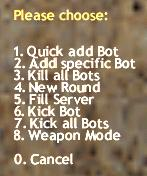
This is the PODBOT User Menu.
1. Quick Add Bot - This does what it says. It quickly adds a Bot giving him a random name, team, skill and model. Skill will be chosen randomly between your minbotskill/maxbotskill values specified in podbot.cfg.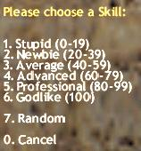
This lets You choose a skill for specyfic Bot.
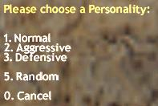
This lets You choose a personality for specyfic Bot.
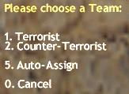
This lets You choose a team for specyfic Bot.
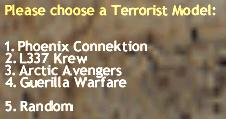
This lets You choose a model for specyfic Bot (T team).
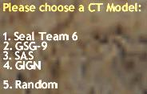
This lets You choose a model for specyfic Bot (CT team).
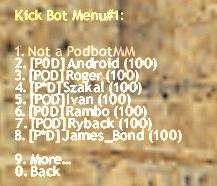
This lets You choose the Bot You want to kick - page 1.
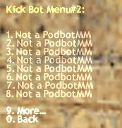
This lets You choose the Bot You want to kick - page 2.
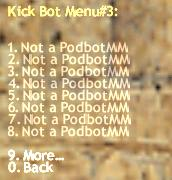
This lets You choose the Bot You want to kick - page 3.
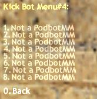
This lets You choose the Bot You want to kick - page 4.
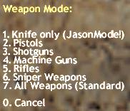
This lets You choose a weapon mode for bots.
FunModes:
This was one of the features removed when PODBot was ported to metamod.
Ordering Bots through Radio Commands:
You can use some of the Radio Commands to get more support from your Bots
Note: When you issue a 'Follow me' Command Bots won't follow you in 3 cases:
A Terrorist Bot carrying the C4 or picking it up, will also issue a "Follow Me" sometimes to have some assistance with him. (Note: that they have problems following on ladders at the moment because the movement is unwaypointed.) They also do some other Radio Commands like "Need Backup", " Enemy down", " Enemy spotted", " I'm in Position" (to tell you he's camping) but not very often, otherwise it would surely get on your nerves...
Summary of Bot Reactions to Radio Commands:
Bot Skill differences:
There is a file called botskill.cfg were you can tweak most skill parameters of the bots by editing the file 'botskill.cfg'
with any text-editor.
Also take a look into 'podbot.cfg' to adjust some more things to your liking...settings for the Bots if you find them too
easy/too hard,
First, Bots with low skills will pause/camp longer and more often, Bots with low skills have a bigger surprise time and they
shoot slower and are lucky if they hit something..
Then there are minor behaviour differences. For example Bots with a skill above 80 use the Knife more often if you're
near them.
If you want to get headshots all the time and attack really fast - add some Bots with a skill of 100.
Bot Personalities:
There are 3 different Personalities in POD now, if you have 'detailnames' turned on they are shown through the Prefixes like this:
Right now these personalities affect only bot's buying system. In the future we want to extend a lot of stuff around Personalities, but You can specify which one type of personlity has to be added to the game by addbot command (or fillserver or from podbotmenu) .
BotChats:
The botchats are files which store what the bot can say during the game and when it's spectating.
They are located in the podbot\botchats Folder where you installed the Bot.
The translated versions (except the German and English ones) don't use the new Text replacements and the dynamic keyword
chat is still in English language.
Rename and copy one of these to "botchat.txt" in the main podbot folder to have your localized Bot Talk.
These translated versions of the Botchat are available:
Auto add/kick bot function
What do the people want? They want to keep as constant the number of bots+players at the server, but sometimes
this was not working correct in old PB2.5 (client connection failed - bot didn't rejoin back) - sometimes this made
a server empty. Another people want the same but with the possibility of some manual control of bots on the server
(some manual kick, some manual add, some removebots and some fillserver - these function have to be still availiable).
How to solve this?
Now in code is a variable invisible for user-admin. It's name is g_iPeoBotsKept - this variable defines how many
bots+players shuld be still on the server. This name is only here for explaining how this is working now.
The meaning of max_bots and min_bots - these are limits only but with possibility change them from console by:
pb max_bots {new_value}
pb min_bots {new_value}
The max_bots variable defines how many bots+players will be on the server when You will use fillserver command
(of course - if there are on the server some sufficient slots for all of them) or addbot commands. The min_bots
variable defines the minimum number of bots must stay on the server when:
a) You will call removebots command
b) some of them will be kicked because of joining some people.
You can define max_bots as 12 and min_bots as 2 and put 8 addbot commands in podbot.cfg - then g_iPeoBotsKept
is calculated (automaticaly) as 8 - for example - because it's incremented every single addbot command. If You use
fillserver - this variable will reach 12 (in our example) - in the case of calling fillserver g_iPeoBotsKept is
overwitten by max_bots variabale.
NOTE:
On listenserver except addbots commands also the host (the player-LS owner) is calculated (added) to g_iPeoBotsKept.
So in the case if he has - for example - 8 addbots commands in his podbot.cfg - g_iPeoBotsKept variable will be 9
(at start host and 8 bots on the server).
At the first map (server started) the first bots added to the server are from podbot.cfg - these
added by addbot commands or fillserver. If there are 4 addbot commands - first will enter the game these 4 specyfied
by these commands and after - if there is also a fillserver command - automaticaly will be added some other bots
(according to other parameters of the fillserver command, max_bots and other parameters).
So - You started the game with 8 bots. Then one player is connected and entered the game, then one bot is automaticaly
kicked. Player is disconnected - bot is automaticaly added. This is checked every frame - if still g_iPeoBotsKept is
the same like number of bots+players.
If You decide manualy add some bot (from podbotmenu or by pb addbot command from console) - bot will be added according
to this what You specify (if You type pb addbot 100 2 2 3 "Rocky" - just exactly this bot will be added - not some bot
automaticaly). In this case g_iPeoBotsKept variable will be automaticaly incremented by 1. If You decide to kick manually
some bot - bot will be kicked. If from podbotmenu - You can select iwhicj one should be kicked from menu (4 pages),
if from console:
pb remove #bot_id
or
pb remove bot_name
bot_id means the same like id for standard kick command.
In this case g_iPeoBotsKept variable will be automaticaly decremented by 1. Of course all here is valid only if You are
in range min/max bots You specyfied before.
If You decide to use fillserver and You have actualy 10 bots+players on the server - bots will be added automaticaly
until reaching bots + players = max_bots (in our example 12). In this case g_iPeoBotsKept will be overwritten by
max_bots variable (12).
The same for removebots - If You decide to use this command, bots will be removed from the server until reaching
bots + players = min_bots (in our example 2). In this case g_iPeoBotsKept variable will be overwritten by min_bots
variable (2). If You will write in console :
pb max_bots 6
it will decrase (if is grater) the g_iPeoBotsKept variable to 6 and some bots will be probably kicked.
If You will write in console:
pb min_bots 7
it will incrase (if is lower) the g_iPeoBotsKept variable to 7 and some bots will be probably added. This "probably"
above is depanding of actual situation on the server - if the number of human-players lets kick or add some bots in these
both situations.
Connecting to the game more human-players than is actually calculated g_iPeoBotsKept will not affect this variable.
If You have this variable as 10 and there is 12 human-players - of course You can't kick more bots.
All here can work automaticaly and there is still some control and possiblity of manual bots management.
If You want some delay for bots re-join at new map start then write in console this line:
pb mapstartbotdelay 10
and bot will be joined on the new map after 10s since map start. The same command (but without "pb") You can write in
podbot.cfg.
If because of some reason You don't like this function (auto add/kick bots) You can simply disable it by writting in console:
pb max_bots 0
(or without "pb" in podbot.cfg file).
In this case the value of g_iPeoBotsKept is then following the current number of bots + players, but no one bot will
be automatically added or kicked. Enabling back the function (by typing some different than 0 number for
max_bots) should change nothing on the server (no one bot should be added or kicked after enabling this function) except
the situation You specify some max_bots less than current number of bots+players on the server (in this case some of them
will be kicked until reaching bots+players = max_bots).
Known Limitations/Bugs/Problems still present:
Bots sometimes fall from high places
Sometimes stuck in other Bots (but should unstuck after less than 5 secs)
Sometimes stuck in corners (see above)
Counter Bots sometimes fail to detect the bomb (but happens to humans also, so what?)
Bots lack advanced teamplay (very basic team-play and affection is present)
Bots are too easy to snipe, see above
Bots aren't affected by darkness
Bots don't drive vehicles, hopefully in the 'Source' engine they will :)
Due to HL Engine Limitations Bots can see through func_illusionaries (e.g. curtains in cs_747, doors in cs_backalley)
Bots don't cheat :)
Planned for future Releases:
Refining Combat Behaviours and Weapon Choices
Customisation of Personalities incorporated into a Clan-System
Advanced Team Behaviour
Vehicle support :)
Elimination of most remaining Bugs and Limitations of the above list